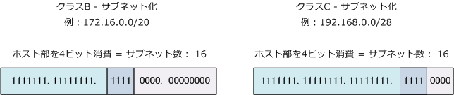
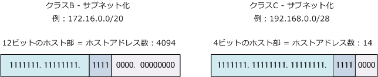

IP address - Subnet Calculator
IPアドレス - サブネット数の算出方法
サブネットは、ホスト部のビットを使用することで作成できます。クラスA、B、Cに関係なく算出方法は 以下の通りです。例えばホスト部を 4 ビット使用すれば、そのクラスでは最大16のサブネットができます。
| サブネット数の算出 | ||
|---|---|---|
| ホスト部を消費するビット数 | 2の乗数 | サブネット数 |
| 1 bit | 21 = 2 | 2 |
| 2 bit | 22 = 4 | 4 |
| 3 bit | 23 = 8 | 8 |
| 4 bit | 24 = 16 | 16 |
| 5 bit | 25 = 32 | 32 |
| 6 bit | 26 = 64 | 64 |
| 7 bit | 27 = 128 | 128 |
| 8 bit | 28 = 256 | 256 |
| 9 bit | 29 = 512 | 512 |
| 10 bit | 210 = 1024 | 1024 |
| 11 bit | 211 = 2048 | 2048 |
| 12 bit | 212 = 4096 | 4096 |
| ： | ： | ： |

IPアドレス - ホストアドレス数の算出方法
ホストアドレス数は各ネットワークでブロードキャストアドレスとネットワークアドレスを差し引いた数。 例えば、ホスト部が 4 ビットあれば、1つのネットワークで使用できるホストアドレス数は最大 14 です。
| ホストアドレス数の算出 | ||
|---|---|---|
| ホスト部のビット数 | 2の乗数 | ホストアドレス数 ( 2の乗数 -2 ) |
| 1 bit | 21 = 2 | 0 |
| 2 bit | 22 = 4 | 2 |
| 3 bit | 23 = 8 | 6 |
| 4 bit | 24 = 16 | 14 |
| 5 bit | 25 = 32 | 30 |
| 6 bit | 26 = 64 | 62 |
| 7 bit | 27 = 128 | 126 |
| 8 bit | 28 = 256 | 254 |
| 9 bit | 29 = 512 | 510 |
| 10 bit | 210 = 1024 | 1022 |
| 11 bit | 211 = 2048 | 2046 |
| 12 bit | 212 = 4096 | 4094 |
| ： | ： | ： |

IPアドレス - サブネットマスクの算出方法
クラスCの以下のサブネットマスクの算出方法を暗記できれば、クラスAもBも考え方は同じとなります。 例えば「 /16 」のサブネットマスクは 255.255.0.0 ですが、「 /17 」 は 255.255.128.0 となります。 続いて「 /18 」は「 255.255.192.0 」となるので「 128→192→224→240 ・・」の増え方は同じです。
| サブネットマスクの算出方法 | ||
|---|---|---|
| CIDR表記 | 10進数表記 | 2進数表記 |
| /24 | 255.255.255.0 | 11111111.11111111.11111111.00000000 |
| /25 | 255.255.255.128 | 11111111.11111111.11111111.10000000 |
| /26 | 255.255.255.192 | 11111111.11111111.11111111.11000000 |
| /27 | 255.255.255.224 | 11111111.11111111.11111111.11100000 |
| /28 | 255.255.255.240 | 11111111.11111111.11111111.11110000 |
| /29 | 255.255.255.248 | 11111111.11111111.11111111.11111000 |
| /30 | 255.255.255.252 | 11111111.11111111.11111111.11111100 |
| /31 | 255.255.255.254 | 11111111.11111111.11111111.11111110 |
| /32 | 255.255.255.255 | 11111111.11111111.11111111.11111111 |
IPアドレス - ネットワークアドレスとブロードキャストアドレスの算出方法
デフォルトのクラスA、B、Cアドレスにおける、ネットワークアドレスとブロードキャストアドレスの場合、 ホスト部のビットを全て「0」にしたものがネットワークアドレス、ホスト部のオクテットを全て「1」に したものがブロードキャストアドレスであることから、オクテット単位で迷いなく算出することができます。
| ネットワークアドレス & ブロードキャストアドレスの算出方法 | ||
|---|---|---|
| IPアドレスの例 | ネットワークアドレス | ブロードキャストアドレス |
| 10.40.1.19/8 | 10.0.0.0 | 10.255.255.255 |
| 172.16.20.101/16 | 172.16.0.0 | 172.16.255.255 |
| 192.168.1.90/24 | 192.168.1.0 | 192.168.1.255 |
クラス A、B、C の概念で、ホスト部をネットワークアドレスなら「 0 」、ブロードキャストアドレスなら 「255」以外にあり得なく、深く考える必要がないのです。それではサブネット化した場合はどうでしょうか。 多くの人は、10進数のIPアドレス情報を2進数へ変換して、ネットワーク部とホスト部にそれを分離してから ホスト部にあたるものを全て「0」ビットにしたものがネットワークアドレス、全て「1」ビットにしたものが ブロードキャストアドレスというやり方で算出すると思います。しかしシンプルで高速な算出方法があります。
| ネットワークアドレス & ブロードキャストアドレスの算出方法 | ||
|---|---|---|
| IPアドレスの例 | ネットワークアドレス | ブロードキャストアドレス |
| 10.40.1.19/12 | 10.32.0.0 | 10.47.255.255 |
| 172.16.20.101/21 | 172.16.16.0 | 172.16.23.255 |
| 192.168.1.90/27 | 192.168.1.64 | 192.168.1.95 |
以下のステップにより簡単に算出できますし、2進数への変換も必要ありません。例を読めば分かります。
① サブネットマスクの算出 ② 256からサブネットマスク値をマイナス ③ ②の値を 0 から加算していく（この結果がネットワークアドレス） ④ ネットワークアドレスから -1 としたものがブロードキャストアドレス。
例えば「192.168.1.90/27」のサブネットマスクは「255.255.255.224」です。256 - 224 =「32」となり、 192.168.1.0/27 → 192.168.1.32/27 → 192.168.1.64/27 → 192.168.1.96/27がネットワークアドレスで あることが分かります。 例えば「192.168.1.90/27」は 64 ～ 96 間のアドレスであることから、その結果、 ネットワークアドレスが「192.168.1.64」、ブロードキャストアドレスが「192.168.1.95」だと分かります。
例えば「172.16.20.101/21」のサブネットマスクは「255.255.248.0」です。256 - 248 =「8」となり、 172.16.0.0/21 → 172.16.8.0/21 → 172.16.16.0/21 → 172.16.24.0/21・・・がネットワークアドレスで あることが分かります。 例えば 「172.16.20.101/21」 は 16 ～ 24 の間のアドレスであることから、結果、 ネットワークアドレスが「172.16.16.0」、ブロードキャストアドレスが「172.16.23.255」だと分かります。
実際に納得のいかないサブネットマスクに関する問題があればサブネット計算ツールで確認してみましょう。